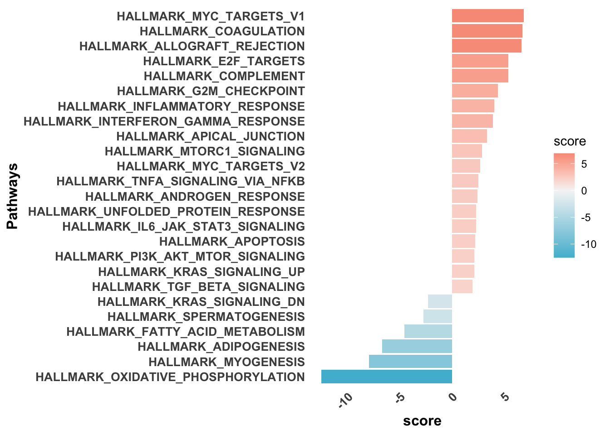

Last updated: 2023-12-06
Checks: 7 0
Knit directory: mi_spatialomics/
This reproducible R Markdown analysis was created with workflowr (version 1.7.1). The Checks tab describes the reproducibility checks that were applied when the results were created. The Past versions tab lists the development history.
Great! Since the R Markdown file has been committed to the Git repository, you know the exact version of the code that produced these results.
Great job! The global environment was empty. Objects defined in the global environment can affect the analysis in your R Markdown file in unknown ways. For reproduciblity it’s best to always run the code in an empty environment.
The command set.seed(20230612) was run prior to running
the code in the R Markdown file. Setting a seed ensures that any results
that rely on randomness, e.g. subsampling or permutations, are
reproducible.
Great job! Recording the operating system, R version, and package versions is critical for reproducibility.
Nice! There were no cached chunks for this analysis, so you can be confident that you successfully produced the results during this run.
Great job! Using relative paths to the files within your workflowr project makes it easier to run your code on other machines.
Great! You are using Git for version control. Tracking code development and connecting the code version to the results is critical for reproducibility.
The results in this page were generated with repository version 5dee03d. See the Past versions tab to see a history of the changes made to the R Markdown and HTML files.
Note that you need to be careful to ensure that all relevant files for
the analysis have been committed to Git prior to generating the results
(you can use wflow_publish or
wflow_git_commit). workflowr only checks the R Markdown
file, but you know if there are other scripts or data files that it
depends on. Below is the status of the Git repository when the results
were generated:
Ignored files:
Ignored: .DS_Store
Ignored: .Rhistory
Ignored: .Rproj.user/
Ignored: analysis/.DS_Store
Ignored: analysis/.Rhistory
Ignored: analysis/deprecated/.DS_Store
Ignored: analysis/molecular_cartography_python/.DS_Store
Ignored: analysis/molecular_cartography_python/figures/
Ignored: analysis/seqIF_python/.DS_Store
Ignored: data/.DS_Store
Ignored: data/140623.calcagno_et_al.seurat_object.rds
Ignored: data/Calcagno2022_int_logNorm_annot.h5Seurat
Ignored: data/mol_cart.heart_regions/
Ignored: data/pixie.cell_table_size_normalized_cell_labels.csv
Ignored: data/results_cts_100.sqm
Ignored: data/seqIF_regions_annotations/
Ignored: data/seurat/
Ignored: figures/.DS_Store
Ignored: figures/Figure_5.pathway_plot.pdf
Ignored: figures/Figure_5.pca_plot.pdf
Ignored: figures/Figure_5.pca_plot.png
Ignored: figures/Figure_5.volcano_plot.pdf
Ignored: figures/Figure_5.vwf_expression_plot.pdf
Ignored: figures/Figure_5.vwf_specificity_plot.pdf
Ignored: figures/Supplementary_figure_3.segmentation_metrics.eps
Ignored: figures/Supplementary_figure_3.segmentation_metrics.png
Ignored: figures/figures.supplementary_figure4.png
Ignored: figures/mol_cart.Figure_2.gains.pdf
Ignored: figures/mol_cart.Figure_2.misty_gains.pdf
Ignored: figures/mol_cart.Myeloid_distribution.png
Ignored: figures/mol_cart.Nppa_distribution.eps
Ignored: figures/mol_cart.Nppa_distribution.pdf
Ignored: figures/mol_cart.Nppa_distribution.png
Ignored: figures/supplementary_figure4.cell_type_distributions.eps
Ignored: figures/supplementary_figure4.cell_type_distributions.png
Ignored: output/.DS_Store
Ignored: output/mol_cart.harmony_object.h5Seurat
Ignored: output/mol_cart/
Ignored: output/molkart_cell_types/
Ignored: output/proteomics/
Ignored: output/seqIF/
Ignored: plots/.DS_Store
Ignored: plots/Figure1.umap_plot.pdf
Ignored: plots/Figure3.ccr2_monomacro_regions.pdf
Ignored: plots/Figure3.cell_types_overtimes.pdf
Ignored: plots/Figure3.pixel_clusters_overtimes.pdf
Ignored: plots/mol_cart.Figure_2.ct_percentage.pdf
Ignored: plots/molkart.squidpy.co_occurrence_plot.CMs_Nppa.sample_2d_r1_s1.png
Ignored: plots/molkart.squidpy.co_occurrence_plot.CMs_Nppa.sample_2d_r2_s1.png
Ignored: plots/molkart.squidpy.co_occurrence_plot.CMs_Nppa.sample_control_r1_s1.png
Ignored: plots/molkart.squidpy.co_occurrence_plot.CMs_Nppa.sample_control_r2_s1.png
Ignored: plots/molkart.squidpy.co_occurrence_plot.Endocardial_cells.sample_2d_r1_s1.png
Ignored: plots/molkart.squidpy.co_occurrence_plot.Endocardial_cells.sample_2d_r2_s1.png
Ignored: plots/molkart.squidpy.co_occurrence_plot.Endocardial_cells.sample_control_r1_s1.png
Ignored: plots/molkart.squidpy.co_occurrence_plot.Endocardial_cells.sample_control_r2_s1.png
Ignored: plots/molkart.squidpy.co_occurrence_plot.Myeloid_cells.sample_2d_r1_s1.png
Ignored: plots/molkart.squidpy.co_occurrence_plot.Myeloid_cells.sample_2d_r2_s1.png
Ignored: plots/molkart.squidpy.co_occurrence_plot.Myeloid_cells.sample_control_r1_s1.png
Ignored: plots/molkart.squidpy.co_occurrence_plot.Myeloid_cells.sample_control_r2_s1.png
Ignored: plots/molkart.squidpy.nhood_enrichment_plot.sample_2d_r1_s1.png
Ignored: plots/molkart.squidpy.nhood_enrichment_plot.sample_2d_r2_s1.png
Ignored: plots/molkart.squidpy.nhood_enrichment_plot.sample_control_r1_s1.png
Ignored: plots/molkart.squidpy.nhood_enrichment_plot.sample_control_r2_s1.png
Ignored: references/.DS_Store
Ignored: renv/library/
Ignored: renv/staging/
Untracked files:
Untracked: analysis/deprecated/mol_cart.misty_neighbourhood_analysis.Rmd
Untracked: analysis/deprecated/mol_cart.molkart.process_quantifications_seurat.Rmd
Untracked: analysis/molecular_cartography_python/animation.gif
Untracked: analysis/molecular_cartography_python/kuppe_heart19.h5ad
Untracked: analysis/molecular_cartography_python/mol_cart.plot_points_on_mask.ipynb
Untracked: analysis/molecular_cartography_python/mol_cart.spot_animation.ipynb
Untracked: analysis/molecular_cartography_python/molkart.local_analysis_lianaplus.ipynb
Untracked: analysis/plots/
Untracked: pipeline_configs/
Unstaged changes:
Modified: analysis/data_processing.Rmd
Modified: analysis/figures.Figure1.Rmd
Modified: analysis/figures.Figure2.Rmd
Modified: analysis/figures.deep_visual_proteomics.Rmd
Modified: analysis/figures.supplementary_figure_X.proteomics_qc.Rmd
Modified: analysis/index.Rmd
Deleted: analysis/mol_cart.misty_neighbourhood_analysis.Rmd
Deleted: analysis/mol_cart.molkart.process_quantifications_seurat.Rmd
Modified: analysis/mol_cart.supplementary_figure4.Rmd
Modified: analysis/seqIF.region_quantification.Rmd
Modified: analysis/spatialMI_functions.py
Modified: code/functions.R
Modified: figures/Figure_5.eps
Modified: figures/Figure_5.pdf
Modified: figures/Figure_5.png
Modified: figures/Figure_5.svg
Modified: figures/Supplementary_figure_2.png
Modified: figures/Supplementary_figure_5.segmentation_metrics.poster.eps
Modified: figures/Supplementary_figure_X.proteomics.eps
Modified: figures/Supplementary_figure_X.proteomics.png
Modified: plots/Figure1.dotplot.pdf
Modified: plots/molkart.umap_time.png
Modified: renv.lock
Modified: renv/activate.R
Modified: renv/settings.json
Note that any generated files, e.g. HTML, png, CSS, etc., are not included in this status report because it is ok for generated content to have uncommitted changes.
These are the previous versions of the repository in which changes were
made to the R Markdown
(analysis/proteomics.pathway_enrichment_analysis.Rmd) and
HTML (docs/proteomics.pathway_enrichment_analysis.html)
files. If you’ve configured a remote Git repository (see
?wflow_git_remote), click on the hyperlinks in the table
below to view the files as they were in that past version.
| File | Version | Author | Date | Message |
|---|---|---|---|---|
| Rmd | 5dee03d | FloWuenne | 2023-09-04 | Latest code update. |
| html | 5dee03d | FloWuenne | 2023-09-04 | Latest code update. |
| html | 67e546d | FloWuenne | 2023-07-23 | Build site. |
| Rmd | ed31d81 | FloWuenne | 2023-07-02 | Finalized proteomics analysis. |
| html | ed31d81 | FloWuenne | 2023-07-02 | Finalized proteomics analysis. |
| html | 5f927dc | FloWuenne | 2023-06-20 | Build site. |
| Rmd | f29aea6 | FloWuenne | 2023-06-20 | Commented out Omnipath for the moment. |
| html | c1395e6 | FloWuenne | 2023-06-20 | Build site. |
| Rmd | 236130c | FloWuenne | 2023-06-20 | Updating proteomic analysis. |
| html | 236130c | FloWuenne | 2023-06-20 | Updating proteomic analysis. |
Here, we are going to perform pathway analysis on the limma results from the proteomic analysis.
First, we load our results from the limma differential expression analysis that we calculated in DEP analysis.
limma_res <- fread("./output/proteomics/proteomics.limma.full_statistics.tsv")
## groups : "MI_IZ_vs_control" "MI_remote_vs_control" "MI_IZ_vs_MI_remote"
## MI_IZ vs MI_remote
mi_signature <- subset(limma_res,analysis == "MI_IZ_vs_MI_remote")
mi_signature <- mi_signature %>%
dplyr::select(t,gene) %>%
filter(!is.na(t)) %>%
arrange(desc(t)) %>%
column_to_rownames(var = "gene") %>%
as.matrix()
missing_stats <- subset(limma_res,is.na(t))$gene
write.table(missing_stats,
file = "./output/proteomics/proteomics.missing_stats_proteinnames.tsv",
sep= "\t",
col.names = FALSE,
row.names = FALSE,
quote = FALSE)We will use Msigdb databases to perform pathway analysis
mh_gsea <- import_gmt(gmtfile = "./references/mh.all.v2023.1.Mm.symbols.gmt")
|
| | 0%
|
|= | 2%
|
|=== | 4%
|
|==== | 6%
|
|====== | 8%
|
|======= | 10%
|
|======== | 12%
|
|========== | 14%
|
|=========== | 16%
|
|============= | 18%
|
|============== | 20%
|
|=============== | 22%
|
|================= | 24%
|
|================== | 26%
|
|==================== | 28%
|
|===================== | 30%
|
|====================== | 32%
|
|======================== | 34%
|
|========================= | 36%
|
|=========================== | 38%
|
|============================ | 40%
|
|============================= | 42%
|
|=============================== | 44%
|
|================================ | 46%
|
|================================== | 48%
|
|=================================== | 50%
|
|==================================== | 52%
|
|====================================== | 54%
|
|======================================= | 56%
|
|========================================= | 58%
|
|========================================== | 60%
|
|=========================================== | 62%
|
|============================================= | 64%
|
|============================================== | 66%
|
|================================================ | 68%
|
|================================================= | 70%
|
|================================================== | 72%
|
|==================================================== | 74%
|
|===================================================== | 76%
|
|======================================================= | 78%
|
|======================================================== | 80%
|
|========================================================= | 82%
|
|=========================================================== | 84%
|
|============================================================ | 86%
|
|============================================================== | 88%
|
|=============================================================== | 90%
|
|================================================================ | 92%
|
|================================================================== | 94%
|
|=================================================================== | 96%
|
|===================================================================== | 98%
|
|======================================================================| 100%m2_all_gsea <- import_gmt(gmtfile = "./references/m2.all.v2023.1.Mm.symbols.gmt")
|
| | 0%
|
| | 1%
|
|= | 1%
|
|= | 2%
|
|== | 2%
|
|== | 3%
|
|== | 4%
|
|=== | 4%
|
|=== | 5%
|
|==== | 5%
|
|==== | 6%
|
|===== | 6%
|
|===== | 7%
|
|===== | 8%
|
|====== | 8%
|
|====== | 9%
|
|======= | 9%
|
|======= | 10%
|
|======= | 11%
|
|======== | 11%
|
|======== | 12%
|
|========= | 12%
|
|========= | 13%
|
|========= | 14%
|
|========== | 14%
|
|========== | 15%
|
|=========== | 15%
|
|=========== | 16%
|
|============ | 16%
|
|============ | 17%
|
|============ | 18%
|
|============= | 18%
|
|============= | 19%
|
|============== | 19%
|
|============== | 20%
|
|============== | 21%
|
|=============== | 21%
|
|=============== | 22%
|
|================ | 22%
|
|================ | 23%
|
|================ | 24%
|
|================= | 24%
|
|================= | 25%
|
|================== | 25%
|
|================== | 26%
|
|=================== | 26%
|
|=================== | 27%
|
|=================== | 28%
|
|==================== | 28%
|
|==================== | 29%
|
|===================== | 29%
|
|===================== | 30%
|
|===================== | 31%
|
|====================== | 31%
|
|====================== | 32%
|
|======================= | 32%
|
|======================= | 33%
|
|======================= | 34%
|
|======================== | 34%
|
|======================== | 35%
|
|========================= | 35%
|
|========================= | 36%
|
|========================== | 36%
|
|========================== | 37%
|
|========================== | 38%
|
|=========================== | 38%
|
|=========================== | 39%
|
|============================ | 39%
|
|============================ | 40%
|
|============================ | 41%
|
|============================= | 41%
|
|============================= | 42%
|
|============================== | 42%
|
|============================== | 43%
|
|============================== | 44%
|
|=============================== | 44%
|
|=============================== | 45%
|
|================================ | 45%
|
|================================ | 46%
|
|================================= | 46%
|
|================================= | 47%
|
|================================= | 48%
|
|================================== | 48%
|
|================================== | 49%
|
|=================================== | 49%
|
|=================================== | 50%
|
|=================================== | 51%
|
|==================================== | 51%
|
|==================================== | 52%
|
|===================================== | 52%
|
|===================================== | 53%
|
|===================================== | 54%
|
|====================================== | 54%
|
|====================================== | 55%
|
|======================================= | 55%
|
|======================================= | 56%
|
|======================================== | 56%
|
|======================================== | 57%
|
|======================================== | 58%
|
|========================================= | 58%
|
|========================================= | 59%
|
|========================================== | 59%
|
|========================================== | 60%
|
|========================================== | 61%
|
|=========================================== | 61%
|
|=========================================== | 62%
|
|============================================ | 62%
|
|============================================ | 63%
|
|============================================ | 64%
|
|============================================= | 64%
|
|============================================= | 65%
|
|============================================== | 65%
|
|============================================== | 66%
|
|=============================================== | 66%
|
|=============================================== | 67%
|
|=============================================== | 68%
|
|================================================ | 68%
|
|================================================ | 69%
|
|================================================= | 69%
|
|================================================= | 70%
|
|================================================= | 71%
|
|================================================== | 71%
|
|================================================== | 72%
|
|=================================================== | 72%
|
|=================================================== | 73%
|
|=================================================== | 74%
|
|==================================================== | 74%
|
|==================================================== | 75%
|
|===================================================== | 75%
|
|===================================================== | 76%
|
|====================================================== | 76%
|
|====================================================== | 77%
|
|====================================================== | 78%
|
|======================================================= | 78%
|
|======================================================= | 79%
|
|======================================================== | 79%
|
|======================================================== | 80%
|
|======================================================== | 81%
|
|========================================================= | 81%
|
|========================================================= | 82%
|
|========================================================== | 82%
|
|========================================================== | 83%
|
|========================================================== | 84%
|
|=========================================================== | 84%
|
|=========================================================== | 85%
|
|============================================================ | 85%
|
|============================================================ | 86%
|
|============================================================= | 86%
|
|============================================================= | 87%
|
|============================================================= | 88%
|
|============================================================== | 88%
|
|============================================================== | 89%
|
|=============================================================== | 89%
|
|=============================================================== | 90%
|
|=============================================================== | 91%
|
|================================================================ | 91%
|
|================================================================ | 92%
|
|================================================================= | 92%
|
|================================================================= | 93%
|
|================================================================= | 94%
|
|================================================================== | 94%
|
|================================================================== | 95%
|
|=================================================================== | 95%
|
|=================================================================== | 96%
|
|==================================================================== | 96%
|
|==================================================================== | 97%
|
|==================================================================== | 98%
|
|===================================================================== | 98%
|
|===================================================================== | 99%
|
|======================================================================| 99%
|
|======================================================================| 100%mh_gsea_net <- rename_net(mh_gsea, term, gene, .mor= NULL)
saveRDS(mh_gsea_net,"references/mh.all.v2023.1.Mm.symbols.sets.rds")
mh_gsea_sets <- extract_sets(mh_gsea_net)We will focus on the comparison between the MI_IZ region versus the MI_remote region, as this comparison should capture the local differences of the endocardial layer close to the infarct versus those far away. As we have seen in the PCA and differential expression analysis, there are also not a lot of strong differences between MI_remote and MI_control, meaning that most changes we would identify comparing to the control, will also be captured in the MI_IZ vs MI_remote comparison.
## Run decoupler based on limma statistics
mi_ulm <- run_ulm(mat=mi_signature, .target = gene , .source = term, .mor= NULL,
net=mh_gsea, minsize = 3)
sig_pathways_mi <- subset(mi_ulm,p_value <= 0.05) %>%
arrange(desc(score)) %>%
dplyr::select(-statistic,-condition)
write.table(mi_ulm,
file = "./output/proteomics/proteomics.pathway_results.MIiz_MIremote.tsv",
sep = "\t",
col.names = TRUE,
row.names = FALSE,
quote = FALSE)# Plot
ggplot(sig_pathways_mi, aes(x = reorder(source, score), y = score)) +
geom_bar(aes(fill = score), stat = "identity") +
scale_fill_gradient2(low = proteome_palette[['MI_remote']], high = proteome_palette[['MI_IZ']],
mid = "whitesmoke", midpoint = 0) +
theme_minimal() +
theme(axis.title = element_text(face = "bold", size = 12),
axis.text.x =
element_text(angle = 45, hjust = 1, size =10, face= "bold"),
axis.text.y = element_text(size =10, face= "bold"),
panel.grid.major = element_blank(),
panel.grid.minor = element_blank()) +
xlab("Pathways") +
coord_flip()
| Version | Author | Date |
|---|---|---|
| ed31d81 | FloWuenne | 2023-07-02 |
pathway <- 'HALLMARK_COAGULATION'
df <- mh_gsea_net %>%
filter(source == pathway) %>%
arrange(target)
inter <- sort(intersect(rownames(mi_signature),df$target))
sessionInfo()R version 4.3.1 (2023-06-16)
Platform: aarch64-apple-darwin20 (64-bit)
Running under: macOS Sonoma 14.1.2
Matrix products: default
BLAS: /Library/Frameworks/R.framework/Versions/4.3-arm64/Resources/lib/libRblas.0.dylib
LAPACK: /Library/Frameworks/R.framework/Versions/4.3-arm64/Resources/lib/libRlapack.dylib; LAPACK version 3.11.0
locale:
[1] en_US.UTF-8/en_US.UTF-8/en_US.UTF-8/C/en_US.UTF-8/en_US.UTF-8
time zone: Europe/Berlin
tzcode source: internal
attached base packages:
[1] stats4 stats graphics grDevices datasets utils methods
[8] base
other attached packages:
[1] RColorBrewer_1.1-3 ggsci_3.0.0 cowplot_1.1.1
[4] lubridate_1.9.3 forcats_1.0.0 stringr_1.5.1
[7] dplyr_1.1.4 purrr_1.0.2 readr_2.1.4
[10] tidyr_1.3.0 tibble_3.2.1 ggplot2_3.4.4
[13] tidyverse_2.0.0 pheatmap_1.0.12 data.table_1.14.8
[16] GSEABase_1.64.0 graph_1.80.0 annotate_1.80.0
[19] XML_3.99-0.16 AnnotationDbi_1.64.1 IRanges_2.36.0
[22] S4Vectors_0.40.2 Biobase_2.62.0 BiocGenerics_0.48.1
[25] here_1.0.1 OmnipathR_3.11.1 decoupleR_2.8.0
[28] workflowr_1.7.1
loaded via a namespace (and not attached):
[1] DBI_1.1.3 bitops_1.0-7 logger_0.2.2
[4] readxl_1.4.3 rlang_1.1.2 magrittr_2.0.3
[7] git2r_0.33.0 compiler_4.3.1 RSQLite_2.3.3
[10] getPass_0.2-2 png_0.1-8 callr_3.7.3
[13] vctrs_0.6.5 rvest_1.0.3 pkgconfig_2.0.3
[16] crayon_1.5.2 fastmap_1.1.1 backports_1.4.1
[19] XVector_0.42.0 labeling_0.4.3 utf8_1.2.4
[22] promises_1.2.1 rmarkdown_2.25 tzdb_0.4.0
[25] ps_1.7.5 bit_4.0.5 xfun_0.41
[28] zlibbioc_1.48.0 cachem_1.0.8 GenomeInfoDb_1.38.1
[31] jsonlite_1.8.8 progress_1.2.2 blob_1.2.4
[34] highr_0.10 later_1.3.1 prettyunits_1.2.0
[37] R6_2.5.1 bslib_0.6.1 stringi_1.8.2
[40] jquerylib_0.1.4 cellranger_1.1.0 Rcpp_1.0.11
[43] knitr_1.45 httpuv_1.6.12 Matrix_1.6-4
[46] igraph_1.5.1 timechange_0.2.0 tidyselect_1.2.0
[49] rstudioapi_0.15.0 yaml_2.3.7 curl_5.1.0
[52] processx_3.8.2 plyr_1.8.9 lattice_0.22-5
[55] withr_2.5.2 KEGGREST_1.42.0 evaluate_0.23
[58] xml2_1.3.6 Biostrings_2.70.1 pillar_1.9.0
[61] BiocManager_1.30.22 whisker_0.4.1 checkmate_2.3.1
[64] renv_1.0.3 generics_0.1.3 rprojroot_2.0.4
[67] RCurl_1.98-1.13 hms_1.1.3 munsell_0.5.0
[70] scales_1.3.0 xtable_1.8-4 glue_1.6.2
[73] tools_4.3.1 fs_1.6.3 grid_4.3.1
[76] colorspace_2.1-0 GenomeInfoDbData_1.2.11 cli_3.6.1
[79] rappdirs_0.3.3 fansi_1.0.5 gtable_0.3.4
[82] sass_0.4.7 digest_0.6.33 farver_2.1.1
[85] memoise_2.0.1 htmltools_0.5.7 lifecycle_1.0.4
[88] httr_1.4.7 bit64_4.0.5